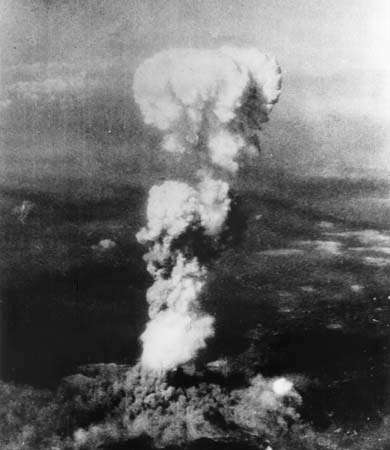

World War II, also called Second conflict that involved virtually every part of the world during the years 1939–45. The principal belligerents were the Axis powers—Germany, Italy, and Japan—and the Allies—France, Great Britain, the United States, the Soviet Union, and, to a lesser extent, China. The war was in many respects a continuation, after an uneasy 20-year hiatus, of the disputes left unsettled by World War I. The 40,000,000–50,000,000 deaths incurred in World War II make it the bloodiest conflict, as well as the largest war, in history.

A gigantic mushroom cloud rising above Hiroshima, Japan, on August 6, 1945, after a U.S. aircraft dropped an atomic bomb on the city, immediately killing more than 70,000 people.
Along with World War I, World War II was one of the great watersheds of 20th-century geopolitical history. It resulted in the extension of the Soviet Union’s power to nations of eastern Europe, enabled a communist movement to eventually achieve power in China, and marked the decisive shift of power in the world away from the states of western Europe and toward the United States and the Soviet Union.